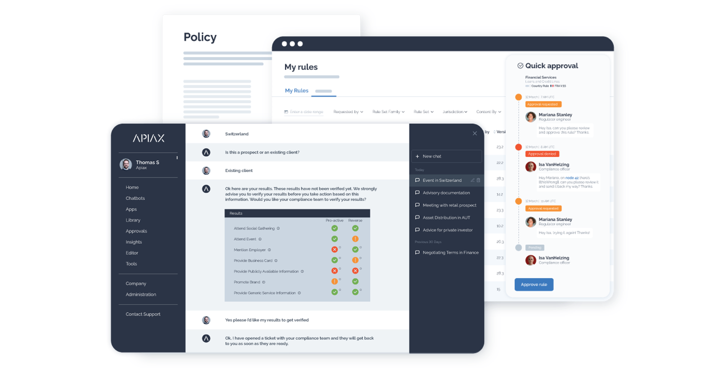
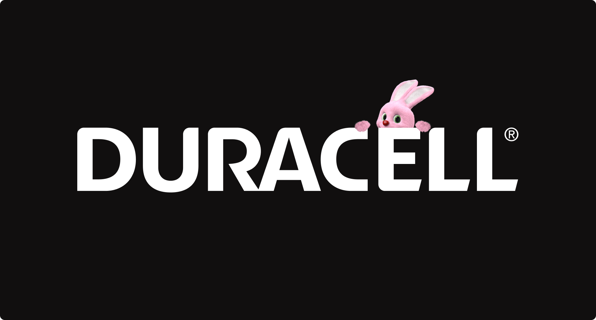
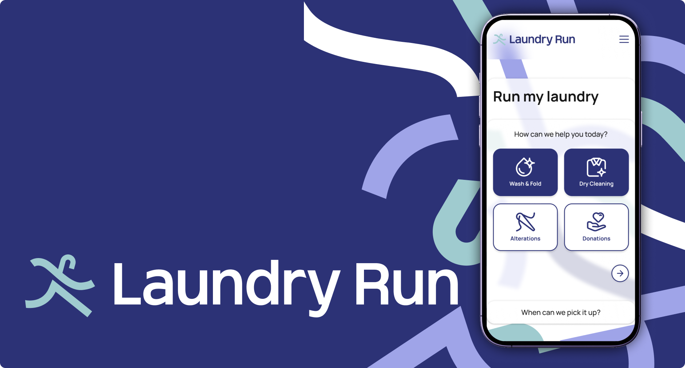
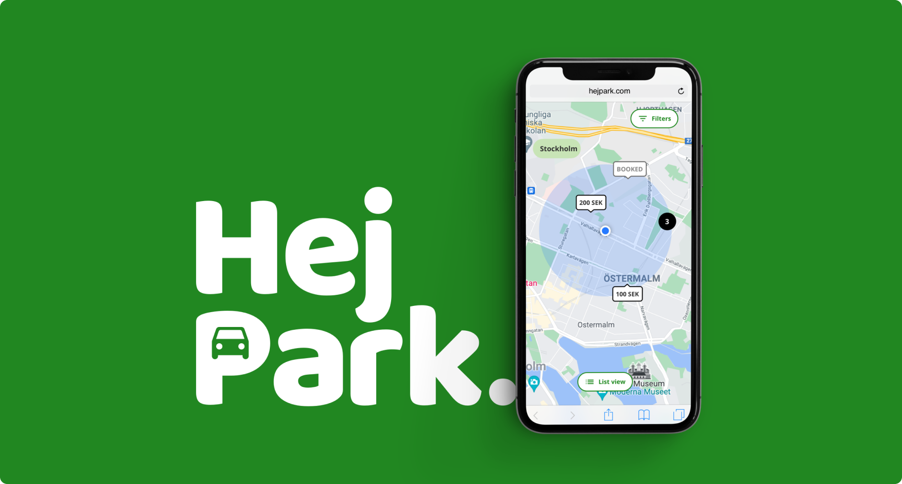

Vera
Martins
Senior Product Designer with 13 years of experience, now designing agentic AI products for the enterprise. Turning complex challenges into clear, user-centred products, delivering measurable impact from conversion growth to multi-million-user scale.
AI Policy Assistant
Case Study
Apiax's AI Policy Assistant helped organisations interpret and apply complex, evolving AI regulations. I led the design of the core product experience, collaborating with policy experts, product managers, and engineers.
As Lead Designer I translate dense legal and regulatory content into clear, actionable workflows through UX research, information architecture, interaction design, and usability testing, reducing time to complete policy-related tasks by approximately 30–40% and enabling the product to scale with ongoing regulatory change.

Designing a scalable platform
Case Study
Nokia's marketing website had grown across 16 teams, each building pages on its own with no shared guidelines. The result was an inconsistent site, slow content production, and a heavy dependency on design and development.
As a Senior Product Designer with platform-level ownership, I shifted the focus from designing pages to designing a scalable system, reducing page creation time by 60% and design involvement per page by approximately 40–50%.
Conversion Rate Optimisation (CRO)
Led the CRO initiative to improve product imagery across European Amazon storefronts. Partnered with brand, marketing, and analytics teams to translate user insights and performance data into high-impact design decisions.
Owned end-to-end optimisation including user research, metric definition, A/B testing, and visual iteration, resulting in a 3% increase in conversion rate across European markets and establishing a repeatable framework for ongoing experimentation.

LaundryRun
Case Study
LaundryRun is a digital service focused on modernising laundry pickup and delivery. As Lead Product Designer, I partnered with the LaundryRun team to evolve the concept into a fully defined product strategy and design system.
I led end-to-end product design, including user research, interaction design, service design, and iteration in Agile delivery, reducing booking friction by approximately 20–30%, supporting repeat usage through subscriptions, and improving operational coordination between customers and service partners.

HejPark
Case Study
As HejPark's Product Designer & Strategic Partner, I translated a concept into a validated product. Guiding decisions across design, business, and technology, establishing a scalable product foundation to support growth into new cities.
I owned the end-to-end product design, including user research, interaction design, service design, and iteration in Agile delivery, reducing booking friction by approximately 20–30%, supporting repeat usage through subscriptions, and improving operational coordination between customers and service partners.
